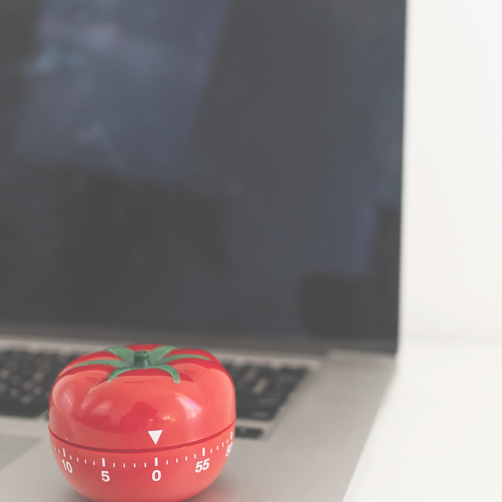

A técnica Pomodoro é um método de gestão de tempo criado por Francesco Cirillo, que ajuda a manter o foco e evitar a procastinação. A ideia é dividir o trabalho em blocos curtos de tempo chamados pomodoro, seguidos de pequenas pausas para descanso.

Selecione uma tarefa de sua lista
Dedique-se por 25 minutos na execução da tarefa escolhida

Faça uma pausa de 5 minutos

Inicie outro pomodoro (25 minutos de dedicação + 5 minutos de pausa)
Após 4 pomodoros, faça uma pausa de até 30 minutos

Inicie outro ciclo de pomodoros